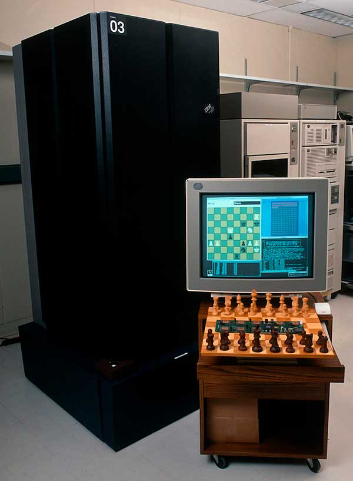

Analytics Portfolio
Introduction
Artificial Intelligence (AI) as a field has been around for quite some time now, long before it re-entered the public eye through the 4th Industrial Revolution and the resulting panic over automation. However, ever since its climactic reappearance, it seems the general population is unlikely to soon forget about it again, with recent developments in AI art only further solidifying its presence in popular culture.
Image source: https://unsplash.com/photos/OI1ToozsKBw
With all that said, the exact definition of AI is often confused with related terms such as machine learning or deep learning, resulting in even greater confusion when these terms are used interchangeably outside of their original contexts. So, I would like to try to compile some notes about this topic here, which should hopefully allow for a complete understanding of the general concepts in AI.
Let’s start by considering the definition of AI.
What is AI?

Image source: https://medium.com/swlh/the-map-of-artificial-intelligence-2020-2c4f446f4e43
At its core, AI doesn’t actually refer to any specific technology or object, it is simply the idea that an artificially created object can be made to simulate the intelligence found in biological creatures. Here, intelligence refers to the capability to take in and process information, then being able to form inferences based on that information. Nowadays, a decent rule of thumb is that if a computer is doing what normally only a human can do, it probably is exhibiting some kind of intelligence.
To realize this broad idea, generations of computer scientists have attempted different methods to make a machine think. Generally, there are two ways to achieve this, either improve the raw computational power of the machine or alter the way the machine processes information into one that is more efficient.
Figuring out which of the two methods is better or more needed to further develop AI is still an open problem to this day, with large organizations like OpenAI routinely investing millions into the effort to produce more powerful computers, whereas certain academics believe that without a sufficient understanding of the human mind, true AI will forever remain outside our grasp.
While improving the hardware of our machine’s is more of an engineering problem and is outside the scope of this compilation, the various algorithms used over the years to develop progressively more powerful AIs are certainly not. These algorithms will the topic of our consideration in the following section.
Rule-based AI
 When we think of modern AI developments, we tend to think about a computer learning from data that we feed it, and don’t often think about a programmer individually programming every single rule that the AI must follow to achieve its goals. However, in the early days of AI, rule-based programs known as expert systems were the only known method for making computers appear intelligent. Most notably, IBM’s legendary chess computer Deep Blue can be classified as an expert system. [1]
Expert systems are actually still in use to this day, though most people no longer consider them to be anywhere near the cutting-edge of AI nowadays, they still have their role in supporting real human experts at performing their jobs. A similar concept can be found in video game AIs, who technically do not exhibit any traits found in modern AI (such as the capacity to learn) and thus cannot be considered ‘True AIs’, yet strictly speaking they are still an attempt to simulate human intelligence artificially and you would not be incorrect in calling them AIs.
This actually leads us into a trend in AI where as technology develops further, things that would have easily qualified as AIs in the past, get sequestered into the limbo of technically satisfying the requirements of being an AI while not being acknowledged as such by the wider AI community. While these gradual shifts in the definition of AI definitely increase the potential befuddlement newcomers face, it is an inevitable consequence of such a rapidly developing field.
Statistical, Machine & Deep Learning
Now, onto the real talk of the town. Machine learning and deep learning have managed to infiltrate modern research efforts into AI almost completely, and for good reason as well as we can quite plainly see. The real shift that these methods have compared to previous rule-based systems is that instead of having a human comprehend every single rule that goes into making a decision, a computer system is made to simulate learning and figure out those rules for themselves.
Ultimately, these new technologies find their roots in mathematics, in particular the field of statistics. To begin with, statistics has always been the subfield of mathematics that studies data, and data is something machine learning and deep learning revolve around. Chronologically, while statistics itself certainly predates machine learning, a field known as statistical learning can be seen as its contemporary as it is an alternative framework for constructing models that often parallels machine learning.
More specifically, statistical learning is fundamentally concerned with building interpretable statistical models, while machine learning is most concerned with building models that can achieve results regardless of their interpretability.
For example, when constructing a model under statistical learning, one might begin by understanding their problem domain, gathering relevant data, and then testing the variables found to find their statistical relationships with the target variable, which results in a final model that can perform predictions but is more focused on making sense in terms of statistical robustness and domain knowledge.
On the other hand, when constructing a machine learning model, you would again begin by researching the problem domain and gathering data, but you worry less about making a model that makes sense conventionally and be more concerned about making a model with as high a performance metric as possible. So instead of going through each variable to understand its relationship, you would just feed in as many variables into the model as possible and have the machine figure out which ones are the most suitable.

Lastly, deep learning is a niche field within machine learning that includes ‘deeper’ neural networks, meaning those with three or more layers. While machine learning includes many more models than just neural networks, deep learning is a branch that focuses solely on them. Due to the increased predictive power such a framework has compared to traditional machine learning, some aspects of feature extraction can even be handled by the algorithm itself. [2]
These methods that make machines ‘learn’ are currently our best bet at creating more and more powerful AIs, but while these models have very high practical value, some proponents claim that they still fail to realize the end goal of AI, that is to make a machine truly think like a human can.
Artificial General Intelligence (AGI)
Artificial General Intelligences (AGIs) are probably what comes to mind when we think about depictions of AI in popular culture. An AI system that can fully mimic a human being and truly think like we do, it can be said that all the other methods listed above in some way seek to achieve this ‘Holy Grail’ of AI. Unfortunately, based on our current understanding of AI, an AGI is a completely theoretical concept meant to illustrate what a ‘complete’ AI should be capable of. As of now, nobody is sure if making one is even possible, thus AGIs are currently relegated to the realm of science fiction and will likely remain there for years to come. [3]
What often confuses people here is that many current developments of AI already match if not surpass the capabilities of humans quite easily, such as in the field of cancer detection. While the capabilities of current AI technology in specific fields is unquestionable, the thing that sets apart an AGI is the fact that it can achieve everything a human can achieve instead of achieving one thing very well.
In the example of cancer detection, while our doctors certainly fall short of an AIs sheer analytical prowess in detecting tumors, it would be safe to assume that most doctors could also turn around and apply their analytical skills to any variety of problem, medical or otherwise. The cancer detection AI on the other hand, would definitely be unable to just hop onto the Internet and comprehend news articles for example, even though reading should technically be an easier task than detecting cancer.
Conclusion
After that brief look through the ideas that have driven AI to its current point, it seems that AI as a whole has a long way to go before reaching its end goal, with some of the bottlenecks not even being within the field of AI itself. Instead, they reside in fields like neuroscience, computer engineering, physics and many others. Beyond these bottlenecks however, lay the ever-present threat of another AI winter that could cut off AI from the public eye for another few decades.
Regardless, this concludes our quick look through the main concepts in AI. I hope it presented you with some new information or at the very least organized the available information in a coherent way, cheers!
Additional Notes
[1] Image source: https://spectrum.ieee.org/how-ibms-deep-blue-beat-world-champion-chess-player-garry-kasparov
While Deep Blue and its accomplishments remain an important part of computer science and AI history, there have been criticisms about the conditions under which deep blue won its match against chess grandmaster Garry Kasparov, with even the team behind Deep Blue expressing some disatisfaction at the methods they used to achieve victory. A full video detailing Deep Blue and its climactic match can be found here: Fredrick Knudsen - Deep Blue | Down the Rabbit Hole
[2] A very nice video resource for a more intuitive understanding of deep learning and the mathematics behind it can be found here: 3Blue1Brown - Neural Networks